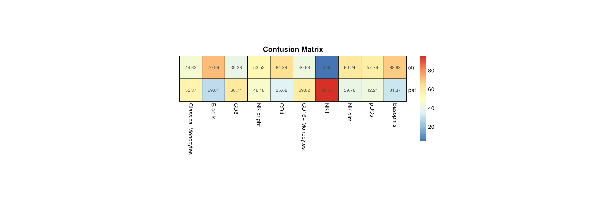
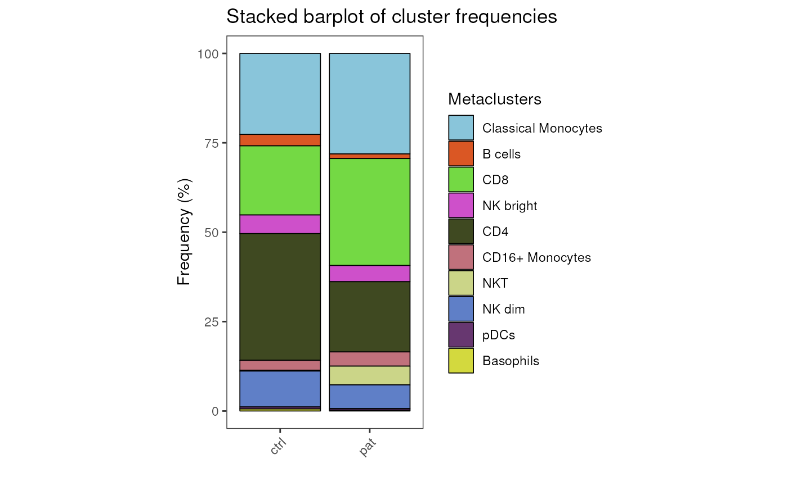
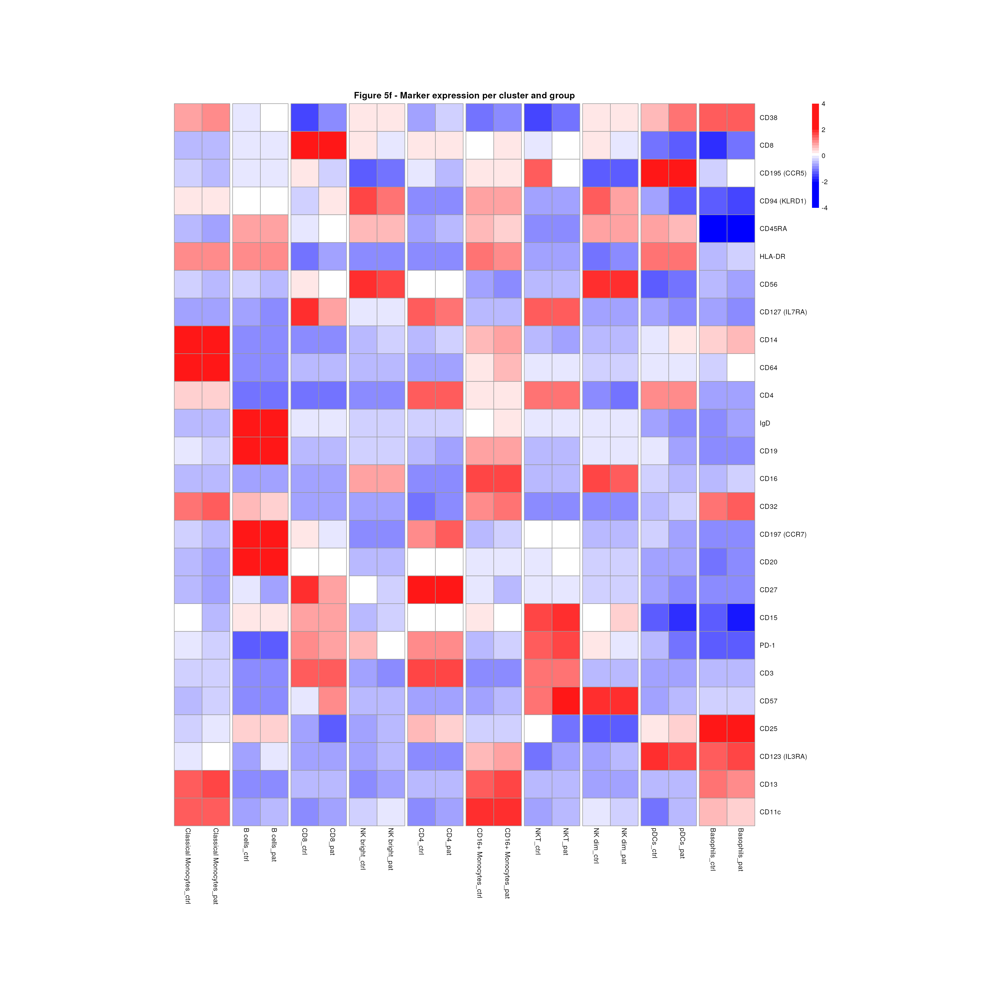

Load an example dataset
condor <- readRDS("../.test_files/condor_diff.rds")cyCONDOR provides several ways to investigate the
difference in cellular frequencies or marker expression.
Cell Frqeuency
Export Perfecntage table
If you prefer to generate your own plots, cyCONDOR can
easily export a percentage table for downstream analysis.
df_frequency(classification = condor$clustering$Phenograph_pca_orig_k_60$metaclusters,
condition = condor$anno$cell_anno$group)## Using Freq as value column: use value.var to override.## classification ctrl pat
## 1 Classical Monocytes 22.65 28.10
## 2 B cells 3.19 1.30
## 3 CD8 19.33 29.91
## 4 NK bright 5.21 4.53
## 5 CD4 35.44 19.64
## 6 CD16+ Monocytes 2.75 3.97
## 7 NKT 0.26 5.26
## 8 NK dim 10.03 6.62
## 9 pDCs 0.55 0.40
## 10 Basophils 0.58 0.27Confusion Matrix
confusion_HM(variables = condor$clustering$Phenograph_pca_orig_k_60$metaclusters,
group = condor$anno$cell_anno$group, size = 40,
title = "Confusion Matrix")
Stacked barplot
barplot_frequency(x_axes = condor$anno$cell_anno$group,
colour = condor$clustering$Phenograph_pca_orig_k_60$metaclusters,
title = "Stacked barplot of cluster frequencies",
legend_title = "Metaclusters") + theme(aspect.ratio = 2)
Percentages Boxplot
box_stat <- boxplot_and_stats(annotation = condor$anno$cell_anno,
sample_var = "sample_ID",
group_var = "group",
variable = condor$clustering$Phenograph_pca_orig_k_60$metaclusters,
numeric = FALSE,
test.type = "t.test")
ggarrange(plotlist = box_stat$plot, legend = "none")
Differential expression
Splitted heatmap by group
HM_differential_marker(fcd = condor,
data_slot = "orig",
cluster_method = "Phenograph_pca_orig_k_60",
cluster_type = "metaclusters",
group_by = "group",
title = "Figure 5f - Marker expression per cluster and group", size = 40)
Session Info
info <- sessionInfo()
info## R version 4.3.1 (2023-06-16)
## Platform: x86_64-pc-linux-gnu (64-bit)
## Running under: Ubuntu 22.04.3 LTS
##
## Matrix products: default
## BLAS: /usr/lib/x86_64-linux-gnu/openblas-pthread/libblas.so.3
## LAPACK: /usr/lib/x86_64-linux-gnu/openblas-pthread/libopenblasp-r0.3.20.so; LAPACK version 3.10.0
##
## locale:
## [1] LC_CTYPE=en_US.UTF-8 LC_NUMERIC=C
## [3] LC_TIME=en_US.UTF-8 LC_COLLATE=en_US.UTF-8
## [5] LC_MONETARY=en_US.UTF-8 LC_MESSAGES=en_US.UTF-8
## [7] LC_PAPER=en_US.UTF-8 LC_NAME=C
## [9] LC_ADDRESS=C LC_TELEPHONE=C
## [11] LC_MEASUREMENT=en_US.UTF-8 LC_IDENTIFICATION=C
##
## time zone: Etc/UTC
## tzcode source: system (glibc)
##
## attached base packages:
## [1] stats graphics grDevices utils datasets methods base
##
## other attached packages:
## [1] ggpubr_0.6.0 ggplot2_3.4.4 cyCONDOR_0.1.5
##
## loaded via a namespace (and not attached):
## [1] fs_1.6.3 destiny_3.14.0
## [3] matrixStats_1.1.0 bitops_1.0-7
## [5] devtools_2.4.5 lubridate_1.9.3
## [7] RColorBrewer_1.1-3 doParallel_1.0.17
## [9] ggsci_3.0.0 Rgraphviz_2.44.0
## [11] profvis_0.3.8 tools_4.3.1
## [13] backports_1.4.1 utf8_1.2.4
## [15] R6_2.5.1 urlchecker_1.0.1
## [17] withr_2.5.1 sp_2.1-1
## [19] prettyunits_1.2.0 gridExtra_2.3
## [21] cli_3.6.1 Biobase_2.60.0
## [23] textshaping_0.3.7 ggcyto_1.28.1
## [25] labeling_0.4.3 sass_0.4.7
## [27] robustbase_0.99-0 readr_2.1.4
## [29] randomForest_4.7-1.1 askpass_1.2.0
## [31] proxy_0.4-27 slingshot_2.8.0
## [33] pkgdown_2.0.7 systemfonts_1.0.5
## [35] foreign_0.8-85 harmony_1.1.0
## [37] parallelly_1.36.0 sessioninfo_1.2.2
## [39] readxl_1.4.3 TTR_0.24.3
## [41] flowCore_2.12.2 rstudioapi_0.15.0
## [43] generics_0.1.3 shape_1.4.6
## [45] car_3.1-2 dplyr_1.1.3
## [47] Matrix_1.6-1.1 RProtoBufLib_2.12.1
## [49] ggbeeswarm_0.7.2 fansi_1.0.5
## [51] S4Vectors_0.38.2 abind_1.4-5
## [53] lifecycle_1.0.3 scatterplot3d_0.3-44
## [55] yaml_2.3.7 carData_3.0-5
## [57] SummarizedExperiment_1.30.2 recipes_1.0.8
## [59] Rtsne_0.16 grid_4.3.1
## [61] promises_1.2.1 crayon_1.5.2
## [63] miniUI_0.1.1.1 lattice_0.22-5
## [65] cowplot_1.1.1 pillar_1.9.0
## [67] knitr_1.44 GenomicRanges_1.52.1
## [69] boot_1.3-28.1 future.apply_1.11.0
## [71] codetools_0.2-19 glue_1.6.2
## [73] pcaMethods_1.92.0 data.table_1.14.8
## [75] remotes_2.4.2.1 vcd_1.4-11
## [77] png_0.1-8 vctrs_0.6.4
## [79] cellranger_1.1.0 gtable_0.3.4
## [81] cachem_1.0.8 gower_1.0.1
## [83] xfun_0.40 princurve_2.1.6
## [85] S4Arrays_1.0.6 mime_0.12
## [87] prodlim_2023.08.28 RcppEigen_0.3.3.9.4
## [89] survival_3.5-7 timeDate_4022.108
## [91] pheatmap_1.0.12 SingleCellExperiment_1.22.0
## [93] iterators_1.0.14 CytoDx_1.20.0
## [95] cytolib_2.12.1 hardhat_1.3.0
## [97] lava_1.7.3 ellipsis_0.3.2
## [99] ipred_0.9-14 ncdfFlow_2.46.0
## [101] nlme_3.1-163 usethis_2.2.2
## [103] xts_0.13.1 GenomeInfoDb_1.36.4
## [105] rprojroot_2.0.3 bslib_0.5.1
## [107] irlba_2.3.5.1 vipor_0.4.5
## [109] Rphenograph_0.99.1 rpart_4.1.21
## [111] colorspace_2.1-0 BiocGenerics_0.46.0
## [113] Hmisc_5.1-1 flowWorkspace_4.12.2
## [115] nnet_7.3-19 ggrastr_1.0.2
## [117] tidyselect_1.2.0 smoother_1.1
## [119] processx_3.8.2 compiler_4.3.1
## [121] curl_5.1.0 glmnet_4.1-8
## [123] graph_1.78.0 htmlTable_2.4.2
## [125] desc_1.4.2 DelayedArray_0.26.7
## [127] checkmate_2.3.0 scales_1.2.1
## [129] DEoptimR_1.1-3 lmtest_0.9-40
## [131] hexbin_1.28.3 RBGL_1.76.0
## [133] callr_3.7.3 stringr_1.5.0
## [135] digest_0.6.33 rmarkdown_2.25
## [137] XVector_0.40.0 htmltools_0.5.6.1
## [139] pkgconfig_2.0.3 base64enc_0.1-3
## [141] umap_0.2.10.0 sparseMatrixStats_1.12.2
## [143] MatrixGenerics_1.12.3 fastmap_1.1.1
## [145] rlang_1.1.1 Rmisc_1.5.1
## [147] htmlwidgets_1.6.2 ggthemes_4.2.4
## [149] shiny_1.7.5.1 DelayedMatrixStats_1.22.6
## [151] farver_2.1.1 jquerylib_0.1.4
## [153] zoo_1.8-12 jsonlite_1.8.7
## [155] ModelMetrics_1.2.2.2 RCurl_1.98-1.13
## [157] magrittr_2.0.3 Formula_1.2-5
## [159] GenomeInfoDbData_1.2.10 munsell_0.5.0
## [161] Rcpp_1.0.11 TrajectoryUtils_1.8.0
## [163] reticulate_1.34.0 stringi_1.7.12
## [165] pROC_1.18.5 zlibbioc_1.46.0
## [167] MASS_7.3-60 plyr_1.8.9
## [169] pkgbuild_1.4.2 ggrepel_0.9.4
## [171] parallel_4.3.1 listenv_0.9.0
## [173] splines_4.3.1 hms_1.1.3
## [175] ps_1.7.5 igraph_1.5.1
## [177] ranger_0.16.0 ggsignif_0.6.4
## [179] RcppHNSW_0.5.0 reshape2_1.4.4
## [181] stats4_4.3.1 pkgload_1.3.3
## [183] XML_3.99-0.15 evaluate_0.22
## [185] rpart.plot_3.1.1 laeken_0.5.2
## [187] tzdb_0.4.0 foreach_1.5.2
## [189] httpuv_1.6.12 VIM_6.2.2
## [191] openssl_2.1.1 RANN_2.6.1
## [193] tidyr_1.3.0 purrr_1.0.2
## [195] future_1.33.0 broom_1.0.5
## [197] xtable_1.8-4 e1071_1.7-13
## [199] RSpectra_0.16-1 rstatix_0.7.2
## [201] later_1.3.1 class_7.3-22
## [203] ragg_1.2.6 tibble_3.2.1
## [205] beeswarm_0.4.0 memoise_2.0.1
## [207] IRanges_2.34.1 cluster_2.1.4
## [209] ggplot.multistats_1.0.0 timechange_0.2.0
## [211] globals_0.16.2 CytoML_2.12.0
## [213] caret_6.0-94